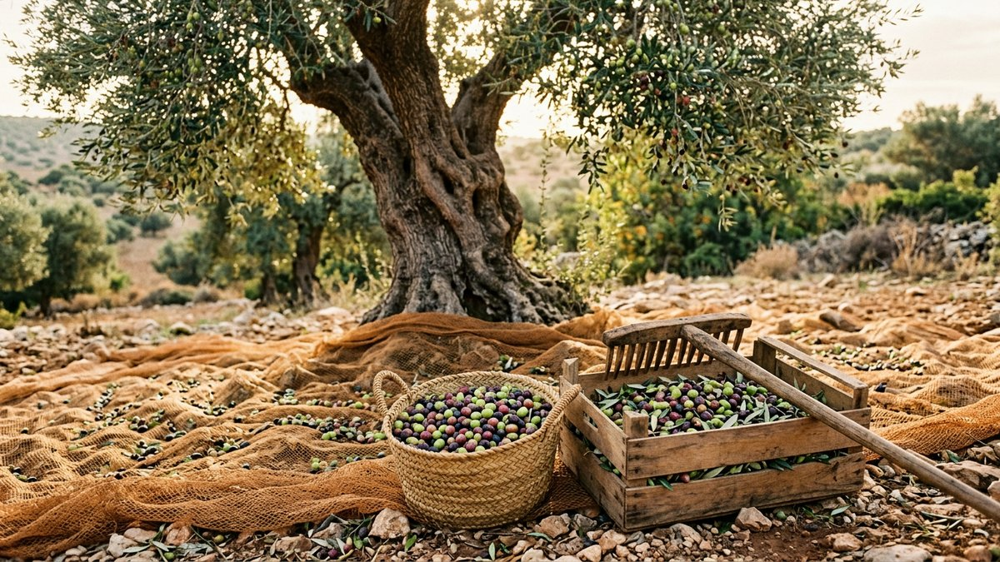

The Olive Grove Project
The Olive Grove ProjectWhen to Harvest Olives for Olive Oil: Color, Timing and Yield (2026)
By Anis Touati · October 10, 2026 · 11 min read
The short answer: pick when most of your olives are changing color, not when they are all black. Two weeks earlier or later changes the oil you get: greener and sharper, or riper and softer, with more or less per kilo.
Autumn is olive harvest season around the Mediterranean, and the question we hear most is simple: how do I know the olives are ready? This guide explains what color tells you, how to measure it with a free method from University of California extension, and how to pick and press without wasting the crop. It comes from a family that is planting olive trees in Tunisia, so we write for people with a few trees as well as a small grove.

- Start picking when the fruit turns: mostly yellow-green to half purple. That is when polyphenols peak and oil is already building.
- Earlier = greener oil: more bitter and peppery, lasts longer, less oil per kilo.
- Later = more oil: softer and buttery, but it keeps less well. Each variety has only a 2 to 3 week sweet spot.
- Count 100 olives: use the UC maturity index below to turn color into a number and compare year to year.
- Press fast: get the fruit to a mill within a day or so of picking.
Why harvest timing changes the oil
An olive does not turn into oil all at once. UC olive adviser Paul Vossen describes oil building up over about 34 weeks of the season. It speeds up until the fruit changes color and softens, then slows down but keeps going. Polyphenols, the compounds behind the bitter and peppery bite, rise during the season and peak just as the skin starts to change color. Once the fruit colors all the way to the pit, polyphenols and many flavor compounds fall fast, over roughly 2 to 5 weeks.
That gives you a trade-off with no perfect answer:
- Early harvest: more polyphenols, a green and grassy flavor, longer shelf life, but less oil.
- Late harvest: more oil per kilo, but a milder, buttery flavor that can turn flat and keeps less well.
A 2021 study on Koroneiki olives found the same thing: early harvest gave oil rich in phenolic compounds and often better sensory quality, but with low oil content and strong bitterness, while late harvest gave more oil and lower quality.
“For any given variety there is probably no more than about two to three weeks of ideal harvest period to capture its best qualities.”
Paul Vossen, UC Cooperative Extension, “Variety and Maturity”
Green, turning or black: what you get
| Stage | What it looks like | Oil you get |
|---|---|---|
| Early (green) | Deep green to yellow-green, firm fruit | Grassy, bitter, peppery; high polyphenols and long shelf life; lowest yield |
| Middle (turning) | Yellow-green, red, purple or black skin on up to about half the surface | The common balance: fruity, some bite, decent yield |
| Late (black) | Skin fully purple or black, flesh coloring toward the pit | Most oil per kilo; softer, buttery, shorter shelf life |
| Over-ripe | Soft, wrinkled, dark through to the pit | Flat flavor and poor keeping; oil making has stopped |
Based on Vossen, “Variety and Maturity” (UC ANR), and the UC Cooperative Extension Olive Maturity Index handout.
How much oil to expect
Yield depends on variety, ripeness and watering. UC Cooperative Extension gives a useful range: very ripe, deficit-irrigated Mission or Picual olives hold about 21% oil, which is around 208 liters from a ton, while unripe, over-watered Sevillano holds about 4%, or about 38 liters from a ton. Divide a ton by those liters and you get roughly 4.8 kg of fruit for a liter at the high end, and about 26 kg at the low end.
| Variety (UC table) | Typical oil content | Polyphenols |
|---|---|---|
| Chemlali (North African) | 26–28% | High |
| Koroneiki | 24–28% | Very high |
| Picual | 24–27% | Very high |
| Arbequina | 22–27% | Low |
| Manzanillo | 15–26% | High |
Source: Vossen, “Variety and Maturity: The Two Largest Influences on Olive Oil Quality,” UC ANR. UC Davis Postharvest lists black olives at 12 to 25% oil depending on cultivar.
Plan on a modest result from a home tree. Many table-olive trees hold less oil than oil varieties, and a few kilos of fruit gives a small bottle at best.
Measure ripeness with the maturity index
Not every olive on a tree colors at the same time, so UC Cooperative Extension uses a simple count. You need about 2 pounds (1 kg) of fruit and a bit of patience.
- Sample the tree. Take branches from high and low, and from all sides. Pick whole branches, not single olives, so the sample is random.
- Pull out 100 olives. Repeat with fresh batches of 100 as often as your sample allows.
- Sort them into eight groups using the table below.
- Multiply, add, divide. Multiply the count in each group by its number (0 to 7), add the results, then divide by 100.
| Group | What you see |
|---|---|
| 0 | Deep green skin, hard fruit |
| 1 | Yellow-green, starting to soften |
| 2 | Less than half the skin turning red, purple or black |
| 3 | More than half the skin turning red, purple or black |
| 4 | All skin purple or black, flesh still white or green |
| 5 | Skin dark, less than half the flesh purple |
| 6 | Skin dark, more than half the flesh purple |
| 7 | Skin and flesh purple all the way to the pit |
Worked example from the UC handout: 5 olives in group 0, 20 in group 1, 20 in group 2, 28 in group 3, 12 in group 4, 8 in group 5, 5 in group 6 and 2 in group 7 give a total of 276, so the maturity index is 2.76.
What number should you aim for? There is no single answer. A study of Hojiblanca and Picudo olives found the best balance of oil content and quality at an index of roughly 2.7 to 3.9, while a review of ripening studies found the best results when color change was still limited to the skin, an index below about 3. UC itself says the index is “not perfect” and the point is to track your own trees. Write the number down each year with the oil you got, and use it to repeat the style you liked.
A simple harvest calendar for a home grove
| When | What to do |
|---|---|
| Early autumn | Check fruit weekly. Look for the first yellow-green and red fruit. |
| Start of color change | Do your first maturity index count. This is the time for a green, polyphenol-rich oil. |
| Index about 2.5 to 3.5 | The usual window for a balanced oil. Plan a picking day and book your mill. |
| Index above 4 | Higher yield, softer flavor. Pick soon, since quality now falls fast. |
| Before the first hard frost | Finish. UC guidance for home curing also advises picking before the first frost. |
Dates change with the climate, the variety and the year. Use color, not the calendar, as your signal.
How to pick olives for oil, step by step
- Spread a net or tarp under the tree so fruit does not hit the ground and pick up dirt.
- Strip the branches by hand or with a small comb rake. Work gently. A little bruising matters less for oil than for table olives, but only if you press quickly.
- Remove leaves and twigs from the harvest before it goes into crates.
- Use ventilated crates, not sealed bags. Piled, warm fruit starts to ferment and spoils the oil.
- Keep the shade on. Store crates in a cool, shaded spot until you leave for the mill.
- Sort out rotten or moldy fruit. A small share of bad olives can taste in the whole batch.
Ask your mill these questions first
- What is your minimum batch size, and do you mix small lots?
- Do you press the same day I deliver?
- Do you clean the line between customers?
- Do you return my own oil or exchange it?
- What containers should I bring, and how should I store the oil?
Store the finished oil away from light and heat, in a sealed dark bottle or a stainless steel container, and use it within a year or so for the best flavor.
Common mistakes
- Waiting for every olive to turn black. By then polyphenols have dropped and the oil is flatter.
- Picking only the easy, low fruit. You get a skewed sample and a skewed maturity index.
- Mixing table and oil goals. If you want olives to eat, pick earlier and gently, then follow our guide to curing olives at home.
- Storing fruit in bags. Heat and moisture shorten the oil's life.
- Judging by one tree. Ripening differs by variety, sun and watering. Test each variety separately.
From one harvest to a whole grove
Every harvest starts with a tree planted years earlier. On our family's land in Tunisia we are planting young grafted olive trees so that more people can one day pick, press and cure their own. Each tree donated through the project gets a certificate and a public on-chain record.
If this guide helped you read your olives a little better, you can plant a tree in the grove for $10. Donations are sent in USDT and appear on a public blockchain ledger, and you can claim a certificate with your name. We're an independent family initiative, not a registered charity. Our transparency page shows how funds can be checked, and you can read why we're planting in Tunisia. Growing your own? See how to grow an olive tree in a pot and the olive tree timeline.
Plant an olive tree in Tunisia 🫒
Frequently asked questions
When should I harvest olives for olive oil?
Harvest when the fruit is changing color, usually when most olives are yellow-green to half purple. Early harvest gives a green, bitter, peppery oil with less yield. Later harvest gives more oil with a softer, buttery taste. Any one variety has only about 2 to 3 weeks of ideal harvest time.
Do green or black olives make better oil?
Neither is simply better. Green and turning olives give oil with more polyphenols, a stronger bitter and peppery bite, and a longer shelf life. Fully black olives give more oil per kilo, but the flavor is milder and the oil keeps less well.
How many olives do I need to make a liter of oil?
It depends on ripeness and variety. UC extension figures put very ripe olives at about 21% oil, which is roughly 4.8 kg of fruit per liter, while unripe, over-watered fruit at 4% needs about 26 kg per liter.
How soon after picking should olives be pressed?
As soon as you can. UC Davis advises processing fresh black olives as soon after harvest as possible, and extension guides recommend quick processing when oil fruit is handled roughly.
Can I use table olives for oil?
Olives grown for the table are picked green-ripe and handled gently. Olive oil varieties are bred and picked for oil content. You can press any olive, but oil varieties give far more oil.
What is the olive maturity index?
A 0 to 7 scale from UC Cooperative Extension. You sort 100 olives by skin and flesh color, multiply each count by its category number, add them and divide by 100. A result near 3 means the olives are about half turned.
Sources
- Vossen P. “Variety and Maturity: The Two Largest Influences on Olive Oil Quality,” UC Cooperative Extension (ucanr.edu): oil accumulation, polyphenols, harvest window, oil % by variety.
- UC Cooperative Extension Sonoma County, “Olive Maturity Index” handout, October 2006 (ucanr.edu): the 0 to 7 scale and the 276 worked example.
- Vossen P. “Understanding Olive Oil Yield,” UC Cooperative Extension (ucanr.edu): oil yield per ton by ripeness and watering.
- UC Davis Postharvest Research and Extension Center, “Olive” (postharvest.ucdavis.edu): oil content of black olives, prompt processing.
- Koroneiki maturity study, Agronomy 2021, 11(1), 122 (mdpi.com): early versus late harvest.
- Hojiblanca and Picudo ripening study, European Journal of Lipid Science and Technology (onlinelibrary.wiley.com): maturity index ranges.
- Ripening indices review, Scientia Horticulturae 2012 (sciencedirect.com): degreening limited to the skin gives best results.